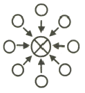
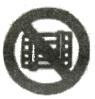
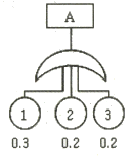
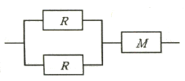
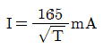
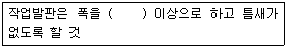
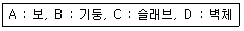

산업안전기사 (2018-04-28 기출문제)
1과목: 안전관리론
1. 6~12명의 구성원으로 타인의 비판 없이 자유로운 토론을 통하여 다량의 독창적인 아이디어를 이끌어내고, 대안적 해결안을 찾기 위한 집단적 사고기법은?
- Role playing
- Brain storming
- Action playing
- Fish Bowl playing
(정답률: 91%)

2. 재해의 발생형태 중 다음 그림이 나타내는 것은?

- 1단순연쇄형
- 2복합연쇄형
- 단순자극형
- 복합형
(정답률: 85%)
3. 산업안전보건법령상 근로자에 대한 일반건강진단의 실시 시기 기준으로 옳은 것은?
- 사무직에 종사하는 근로자 : 1년에 1회 이상
- 사무직에 종사하는 근로자 : 2년에 1회 이상
- 사무직외의 업무에 종사하는 근로자 : 6월에 1회 이상
- 사무직외의 업무에 종사하는 근로자 : 2년에 1회 이상
(정답률: 79%)
4. 재해통계에 있어 강도율이 2.0 인 경우에 대한 설명으로 옳은 것은?
- 한 건의 재해로 인해 전제 작업비용의 2.0%에 해당하는 손실이 발생하였다.
- 근로자 1000명당 2.0건의 재해가 발생하였다.
- 근로시간 1000시간당 2.0건의 재해가 발생하였다.
- 근로시간 1000시간당 2.0일의 근로손실이 발생하였다.
(정답률: 79%)
5. 산업안전보건법령상 교육대상별 교육내용 중 관리감독자의 정기안전ㆍ보건교육 내용이 아닌 것은? (단, 산업안전보건법 및 일반관리에 관한 사항은 제외한다.)(관련 규정 개정전 문제로 여기서는 기존 정답인 1번을 누르면 정답 처리됩니다. 자세한 내용은 해설을 참고하세요.)
- 산업재해보상보험 제도에 관한 사항
- 산업보건 및 직업병 예방에 관한 사항
- 유해ㆍ위험 작업환경 관리에 관한 사항
- 표준안전작업방법 및 지도 요령에 관한 사항
(정답률: 81%)
6. Off JT(Off the Job Training)의 특징으로 옳은 것은?
- 훈련에만 전념할 수 있다.
- 상호신뢰 및 이해도가 높아진다.
- 개개인에게 적절한 지도훈련이 가능하다.
- 직장의 실정에 맞게 실제적 훈련이 가능하다.
(정답률: 73%)
7. 산업안전보건법령상 안전ㆍ보건표지의 종류 중 다음 안전ㆍ보건 표지의 명칭은?

- 화물적재금지
- 차량통행금지
- 물체이동금지
- 화물출입금지
(정답률: 68%)
8. AE형 안전모에 있어 내전압성 이란 최대 몇 V 이하의 전압에 견디는 것을 말하는가?
- 750
- 1000
- 3000
- 7000
(정답률: 68%)
9. 안전점검의 종류 중 태풍, 폭우 등에 의한 침수, 지진 등의 천재지변이 발생한 경우나 이상사태 발생 시 관리자나 감독자가 기계ㆍ기구, 설비 등의 기능상 이상 유무에 대하여 점검하는 것은?
- 일상점검
- 정기점검
- 특별점검
- 수시점검
(정답률: 92%)
10. 재해발생의 직접원인 중 불안전한 상태가 아닌 것은?
- 불안전한 인양
- 부적절한 보호구
- 결함 있는 기계설비
- 불안전한 방호장치
(정답률: 55%)
11. 매슬로우(Maslow)의 욕구단계 이론 중 제2단계 욕구에 해당하는 것은?
- 자아실현의 욕구
- 안전에 대한 욕구
- 사회적 욕구
- 생리적 욕구
(정답률: 89%)
12. 대뇌의 human error로 인한 착오요인이 아닌 것은?
- 인지과정 착오
- 조치과정 착오
- 판단과정 착오
- 행동과정 착오
(정답률: 40%)
13. 주의의 수준이 Phase 0 인 상태에서의 의식상태로 옳은 것은?
- 무의식 상태
- 의식의 이완 상태
- 명료한 상태
- 과긴장 상태
(정답률: 88%)
14. 생체리듬의 변화에 대한 설명으로 틀린 것은?
- 야간에는 체중이 감소한다.
- 야간에는 말초운동 기능 저하된다.
- 체온, 혈압, 맥박수는 주간에 상승하고 야간에 감소한다.
- 혈액의 수분과 염분량은 주간에 증가하고 야간에 감소한다.
(정답률: 82%)
15. 어떤 사업장의 상시근로자 1000명이 작업 중 2명 사망자와 의사진단에 의한 휴업일수 90일 손실을 가져온 경우의 강도율은? (단, 1일 8시간, 연 300일 근무)
- 7.32
- 6.28
- 8.12
- 5.92
(정답률: 58%)
16. 교육심리학의 기본이론 중 학습지도의 원리가 아닌 것은?
- 직관의 원리
- 개별화의 원리
- 계속성의 원리
- 사회화의 원리
(정답률: 55%)
17. 안전보건교육 계획에 포함하여야 할 사항이 아닌 것은?
- 교육의 종류 및 대상
- 교육의 과목 및 내용
- 교육장소 및 방법
- 교육지도안
(정답률: 77%)
18. 인간관계의 매커니즘 중 다른 사람의 행동양식이나 태도를 투입시키거나 다른 사람 가운데서 자기와 비슷한 것을 발견하는 것은?
- 동일화
- 일체화
- 투사
- 공감
(정답률: 76%)
19. 유기화합물용 방독마스크 시험가스의 종류가 아닌 것은?
- 염소가스 또는 증기
- 시클로헥산
- 디메틸에테르
- 이소부탄
(정답률: 83%)
20. Line-Staff형 안전보건관리조직에 관한 특징이 아닌 것은?
- 조직원 전원을 자율적으로 안전활동에 참여시킬 수 있다.
- 스탭의 월권행위의 경우가 있으며 라인스탭에 의존 또는 활용치 않는 경우가 있다.
- 생산부문은 안전에 대한 책임과 권한이 없다.
- 명령계통과 조언 권고적 참여가 혼동되기 쉽다.
(정답률: 69%)
2과목: 인간공학 및 시스템안전공학
21. 사업장에서 인간공학의 적용분야로 가장 거리가 먼 것은?
- 제품설계
- 설비의 고장률
- 재해ㆍ질병 예방
- 장비ㆍ공구ㆍ설비의 배치
(정답률: 65%)
22. 결함수분석법(FTA)의 특징으로 볼 수 없는 것은?
- Top Down 형식
- 특정사상에 대한 해석
- 정량적 해석의 불가능
- 논리기호를 사용한 해석
(정답률: 82%)
23. 음향기기 부품 생산공장에서 안전업무를 담당하는 OOO 대리는 공장 내부에 경보등을 설치하는 과정에서 도움이 될 만한 몇 가지 지식을 적용하고자 한다. 적용 지식 중 맞는 것은?
- 신호 대 배경의 휘도대비가 작을 때는 백색신호가 효과적이다.
- 광원의 노출시간이 1초보다 작으면 광속발산도는 작아야 한다.
- 표적의 크기가 커짐에 따라 광도의 역치가 안정되는 노출시간은 증가한다.
- 배경광 중 점멸 잡음광의 비율이 10%이상이면 점멸등은 사용하지 않는 것이 좋다.
(정답률: 53%)
24. 인간이 기계화 비교하여 정보처리 및 결정의 측면에서 상대적으로 우수한 것은? (단, 인공지능은 제외한다.)
- 연역적 추리
- 정량적 정보처리
- 관찰을 통한 일반화
- 정보의 신속한 보관
(정답률: 65%)
25. 제한된 실내 공간에서 소음문제의 음원에 관한 대책이 아닌 것은?
- 저소음 기계로 대체한다.
- 소음 발생원을 밀폐한다.
- 방음 보호구를 착용한다.
- 소음 발생원을 제거한다.
(정답률: 81%)
26. 인간실수확률에 대한 추정기법으로 가장 적절하지 않은 것은?
- CIT(Critical Incident Technique) : 위급사건기법
- FMEA(Failure Mode and Effect Analysis) : 고장형태 영향분석
- TCRAM(Task Criticality Rating Analysis Method) : 직무위급도 분석법
- THERP(Technique for Human Error Rate Prediction) : 인간 실수율 예측기법
(정답률: 53%)
27. 음성통신에 있어 소음환경과 관련하여 성격이 다른 지수는?
- AI(Articulation Index) : 명료도 지수
- MAA(Minimum Audible Angle) : 최소가청 각도
- PSIL(Preferred-Octave Speech Interference Level) : 음성간섭수준
- PNC(Preferred Noise Criteria Curves) : 선호 소음판단 기준곡선
(정답률: 56%)
28. A 회사에서는 새로운 기계를 설계하면서 레버를 위로 올리면 압력이 올라가도록 하고, 오른쪽 스위치를 눌렀을 때 오른쪽 전등이 커지도록 하였다면, 이것은 각각 어떤 유형의 양립성을 고려한 것인가?
- 레버 – 공간양립성, 스위치 - 개념양립성
- 레버 – 운동양립성, 스위치 - 개념양립성
- 레버 – 개념양립성, 스위치 - 운동양립성
- 레버 – 운동양립성, 스위치 - 공간양립성
(정답률: 61%)
29. 압력 B1과 B2의 어느 한쪽이 일어나면 출력 A가 생기는 경우를 논리합의 관계라 한다. 이때 입력과 출력 사이에는 무슨 게이트로 연결되는가?
- OR 게이트
- 억제 게이트
- AND 게이트
- 부정 게이트
(정답률: 80%)
30. 다음의 FT도에서 사상 A의 발생 확률 값은?

- 게이트 기호가 OR이므로 0.012
- 게이트 기호가 AND이므로 0.012
- 게이트 기호가 OR이므로 0.552
- 게이트 기호가 AND이므로 0.552
(정답률: 74%)
31. 작업공간의 포락면(包絡面)에 대한 설명으로 맞는 것은?
- 개인이 그 안에서 일하는 일차원 공간이다.
- 작업복 등은 포락면에 영향을 미치지 않는다.
- 가장 작은 포락면은 몸통을 움직이는 공간이다.
- 작업의 성질에 따라 포락면의 경계가 달라진다.
(정답률: 69%)
32. 안전교육을 받지 못한 신입직원이 작업 중 전극을 반대로 끼우려고 시도했으나, 플러그의 모양이 반대로 끼울 수 없도록 설계되어 있어서 사고를 예방할 수 있었다. 작업자가 범한 오류와 이와 같은 사고 예방을 위해 적용된 안전설계 원칙으로 가장 적합한 것은?
- 누락(omission) 오류, fail safe 설계원칙
- 누락(omission) 오류, fool proof 설계원칙
- 작위(commission) 오류, fail safe 설계원칙
- 작위(commission) 오류, fool proof 설계원칙
(정답률: 72%)
33. FMEA에서 고장 평점을 결정하는 5가지 평가요소에 해당하지 않는 것은?
- 생산능력의 범위
- 고장발생의 빈도
- 고장방지의 가능성
- 영향을 미치는 시스템의 범위
(정답률: 62%)
34. 어떤 소리가 1000Hz, 60dB 인 음과 같은 높이임에도 4배 더 크게 들린다면, 이 소리의 음압수준은 얼마인가?
- 70dB
- 80dB
- 90dB
- 100dB
(정답률: 71%)
35. 작업장 배치 시 유의사항으로 적절하지 않은 것은?
- 작업의 흐름에 따라 기계를 배치한다.
- 생산효율 증대를 위해 기계설비 주위에 재료나 반제품을 충분히 놓아둔다.
- 공장내외는 안전한 통로를 두어야 하며, 통로는 선을 그어 작업장과 명확히 구별하도록 한다.
- 비상시에 쉽게 대비할 수 있는 통로를 마련하고 사고 진압을 위한 활동통로가 반드시 마련되어야 한다.
(정답률: 87%)
36. 시스템의 수명 및 신뢰성에 관한 설명으로 틀린 것은?
- 병렬설계 및 디레이팅 기술로 시스템의 신뢰성을 증가시킬 수 있다.
- 직렬시스템에서는 부품들 중 최소 수명을 갖는 부품에 의해 시스템 수명이 정해진다.
- 수리가 가능한 시스템의 평균수명(MTBF)은 평균 고장율(λ)과 정비례관계가 성립한다.
- 수리가 불가능한 구성요소로 병렬구조를 갖는 설비는 중복도가 늘어날수록 시스템 수명이 길어진다.
(정답률: 77%)
37. 스트레스에 반응하는 신체의 변화로 맞는 것은?
- 혈소판이나 혈액응고 인자가 증가한다.
- 더 많은 산소를 얻기 위해 호흡이 느려진다.
- 중요한 장기인 뇌ㆍ심장ㆍ근육으로 가는 혈류가 감소한다.
- 상황 판단과 빠른 행동 대응을 위해 감각기관은 매우 둔감해진다.
(정답률: 64%)
38. 산업안전보건법령에 따라 제조업 등 유해ㆍ위험 방지계획서를 작성하고자 할 때 관련 규정에 따라 1명 이상 포함시켜야 하는 사람의 자격으로 적합하지 않은 것은?(오류 신고가 접수된 문제입니다. 반드시 정답과 해설을 확인하시기 바랍니다.)
- 한국산업안전보건공단이 실시하는 관련교육을 8시간 이수한 사람
- 기계, 재료, 화학, 전기, 전자, 안전관리 또는 환경분야 기술사 자격을 취득한 사람
- 관련분야 기사 자격을 취득한 사람으로서 해당 분야에서 3년 이상 근무한 경력이 있는 사람
- 기계안전, 전기안전, 화공안전분야의 산업안전지도사 또는 산업보건지도사 자격을 취득한 사람
(정답률: 71%)
39. 다음 그림과 같은 직ㆍ병렬 시스템의 신뢰도는? (단, 병렬 각 구성요소의 신뢰도는 R이고, 직렬 구성요소의 신뢰도는 M이다.)

- MR3
- R2(1-MR)
- M(R2+R)-1
- M(2R-R2)
(정답률: 70%)
40. 현재 시험문제와 같이 4지택일형 문제의 정보량은 얼마인가?
- 2bit
- 4bit
- 2byte
- 4byte
(정답률: 62%)
3과목: 기계위험방지기술
41. 연삭숫돌의 상부를 사용하는 것을 목적으로 하는 탁상용 연삭기에서 안전덮개의 노출부위 각도는 몇 ° 이내이어야 하는가?
- 90° 이내
- 75° 이내
- 60° 이내
- 1⑤° 이내
(정답률: 61%)
42. 다음 중 산업안전보건법령상 아세틸렌 가스용접장치에 관한 기준으로 틀린 것은?
- 전용의 발생기실은 건물의 최상층에 위치하여야 하며, 화기를 사용하는 설비로부터 1m를 초과하는 장소에 설치하여야 한다.
- 전용의 발생기실을 옥외에 설치한 경우에는 그 개구부를 다른 건축물로부터 1.5m 이상 떨어지도록 하여야 한다.
- 아세틸렌 용접장치를 사용하여 금속의 용접ㆍ용단 또는 가열작업을 하는 경우에는 게이지 압력이 127kPa을 초과하는 압력의 아세틸렌을 발생시켜 사용해서는 아니된다.
- 전용의 발생기실을 설치하는 경우 벽은 불연성 재료로 하고 철근 콘크리트 또는 그 밖에 이와 동등 하거나 그 이상의 강도를 가진 구조로 하여야 한다.
(정답률: 69%)
43. 다음 중 포터블 벨트 컨베이어(potable belt conveyor)의 안전 사항과 관련한 설명으로 옳지 않은 것은?
- 포터블 벨트 컨베이어의 차륜간의 거리는 전도 위험이 최소가 되도록 하여야 한다.
- 기복장치는 포터블 벨트 컨베이어의 옆면에서만 조작하도록 한다.
- 포터블 벨트 컨베이어를 사용하는 경우는 차륜을 고정하여야 한다.
- 전동식 포터블 벨트 컨베이어를 이동하는 경우는 먼저 전원을 내린 후 컨베이어를 이동시킨 다음 컨베이어를 최저의 위치로 내린다.
(정답률: 57%)
44. 사람이 작업하는 기계장치에서 작업자가 실수를 하거나 오조작을 하여도 안전하게 유지되게 하는 안전설계방법은?
- Fail Safe
- 다중계화
- Fool proof
- Back up
(정답률: 75%)
45. 질량 100kg의 화물이 와이어로프에 매달려 2m/s2 의 가속도로 권상되고 있다. 이때 와이어로프에 작용하는 장력의 크기는 몇 N인가? (단, 여기서 중력가속도는 10m/s2 로 한다.)
- 200N
- 300N
- 1200N
- 2000N
(정답률: 59%)
46. 광전자식 방호장치의 광선에 신체의 일부가 감지된 후로부터 급정지기구가 작동개시 하기까지의 시간이 40ms이고, 광축의 최소설치거리(안전거리)가 200mm일 때 급정지기구가 작동개시한 때로부터 프레스기의 슬라이드가 정지될 때까지의 시간은 약 몇 ms인가?
- 60ms
- 85ms
- 1⑤ms
- 130ms
(정답률: 47%)
47. 방사선 투과검사에서 투과사진의 상질을 점검할 때 확인해야 할 항목으로 거리가 먼 것은?
- 투과도계의 식별도
- 시험부의 사진농도 범위
- 계조계의 값
- 주파수의 크기
(정답률: 59%)
48. 양중기의 과부하장치에서 요구하는 일반적인 성능기준으로 틀린 것은?
- 과부하방지장치 작동 시 경보음과 경보램프가 작동되어야 하며 양중기는 작동이 되지 않아야 한다.
- 외함의 전선 접촉부분은 고무 등으로 밀폐되어 물과 먼지 등이 들어가지 않도록 한다.
- 과부하방지장치와 타 방호장치는 기능에 서로 장애를 주지 않도록 부착할 수 있는 구조이어야 한다.
- 방호장치의 기능을 제거하더라도 양중기는 원활하게 작동시킬 수 있는 구조이여야 한다.
(정답률: 83%)
49. 프레스 작업에서 제품 및 스크랩을 자동적으로 위험한계 밖으로 배출하기 위한 장치로 볼 수 없는 것은?
- 피더
- 키커
- 이젝터
- 공기 분사 장치
(정답률: 64%)
50. 용접장치에서 안전기의 설치 기준에 관한 설명으로 옳지 않은 것은?
- 아세틸렌 용접장치에 대하여는 일반적으로 각 취관마다 안전기를 설치하여야 한다.
- 아세틸렌 용접장치의 안전기는 가스용기와 발생기가 분리되어 있는 경우 발생기와 가스용기 사이에 설치한다.
- 가스집합 용접장치에서는 주관 및 분기관에 안전기를 설치하며, 이 경우 하나의 취관에 2개 이상의 안전기를 설치한다.
- 가스집합 용접장치의 안전기 설치는 화기사용설비로부터 3m이상 떨어진 곳에 설치한다.
(정답률: 58%)
51. 산업안전보건법상 보일러의 안전한 가동을 위하여 보일러 규격에 맞는 압력방출장치가 2개 이상 설치된 경우에 최고사용압력 이하에서 1개가 작동되고, 다른 압력방출장치는 최고 사용압력의 몇 배 이하에서 작동되도록 부착하여야 하는가?
- 1.03배
- 1.⑤배
- 1.2배
- 1.5배
(정답률: 79%)
52. 밀링작업에서 주의해야 할 사항으로 옳지 않은 것은?
- 보안경을 쓴다.
- 일감 절삭 중 치수를 측정한다.
- 커터에 옷이 감기지 않게 한다.
- 커터는 될 수 있는 한 컬럼에 가깝게 설치한다.
(정답률: 81%)
53. 작업자의 신체부위가 위험한계 내로 접근하였을 때 기계적인 작용에 의하여 접근을 못하도록 하는 방호장치는?
- 위치제한형 방호장치
- 접근거부형 방호장치
- 접근반응형 방호장치
- 감지형 방호장치
(정답률: 65%)
54. 사업주가 보일러의 폭발사고예방을 위하여 기능이 정상적으로 작동될 수 있도록 유지, 관리할 대상이 아닌 것은?
- 과부하방지장치
- 압력방출장치
- 압력제한스위치
- 고저수위조절장치
(정답률: 68%)
55. 산업안전보건법령에 따라 프레스 등을 사용하여 작업을 하는 경우 작업시작 전 점검사항과 거리가 먼 것은?
- 전단기의 칼날 및 테이블의 상태
- 프레스의 금형 및 고정 볼트 상태
- 슬라이드 또는 칼날에 의한 위험방지 기구의 기능
- 전자밸브, 압력조정밸브 기타 공압 계통의 이상 유무
(정답률: 70%)
56. 숫돌 바깥지름이 150mm일 경우 평형 플랜지의 지름은 최소 몇 mm 이상이어야 하는 가?
- 25mm
- 50mm
- 75mm
- 100mm
(정답률: 81%)
57. 다음 중 아세틸렌 용접장치에서 역화의 원인으로 가장 거리가 먼 것은?
- 아세틸렌의 공급 과다
- 토치 성능의 부실
- 압력조정기의 고장
- 토치 팁에 이물질이 묻은 경우
(정답률: 61%)
58. 설비의 고장형태를 크게 초기고장, 우발고장, 마모고장으로 구분할 때 다음 중 마모고장과 가장 거리가 먼 것은?
- 부품, 부재의 마모
- 열화에 생기는 고장
- 부품, 부재의 반복피로
- 순간적 외력에 의한 파손
(정답률: 81%)
59. 와이어로프 호칭이 '6×19'라고 할 때 숫자 '6'이 의미하는 것은?
- 소선의 지름(mm)
- 소선의 수량(wire수)
- 꼬임의 수량(strand수)
- 로프의 최대인장강도(MPa)
(정답률: 62%)
60. 목재가공용 둥근톱에서 안전을 위해 요구되는 구조로 옳지 않은 것은?
- 톱날은 어떤 경우에도 외부에 노출되지 않고 덮개가 덮여 있어야 한다.
- 작업 중 근로자의 부주의에도 신체의 일부가 날에 접촉할 염려가 없도록 설계되어야 한다.
- 덮개 및 지지부는 경량이면서 충분한 강도를 가져야 하며, 외부에서 힘을 가했을 때 쉽게 회전될 수 있는 구조로 설계되어야 한다.
- 덮개의 가동부는 원활하게 상하로 움직일 수 있고 좌우로 움직일 수 없는 구조로 설계되어야 한다.
(정답률: 71%)
4과목: 전기위험방지기술
61. 전기기기의 충격 전압시험 시 사용하는 표준충격파형(Tf, Tt)은?
- 1.2×50μs
- 1.2×100μs
- 2.4×50μs
- 2.4×100μs
(정답률: 51%)
62. 심실세동 전류란?
- 최소 감지전류
- 치사적 전류
- 고통 한계전류
- 마비 한계전류
(정답률: 65%)
63. 인체의 전기저항을 0.5kΩ이라고 하면 심실세동을 일으키는 위험한계 에너지는 몇 J인가? (단, 심실세동전류값

의 Dalziel의 식을 이용하며, 통전시간은 1초로 한다.)- 13.6
- 12.6
- 11.6
- 10.6
(정답률: 80%)
64. 지구를 고립한 지구도체라 생각하고 1[C]의 전하가 대전되었다면 지구 표면의 전위는 대략 몇[V] 인가? (단, 지구의 반경은 6367km이다.)
- 1414V
- 2828V
- 9×104V
- 9×109V
(정답률: 43%)
65. 감전사고로 인한 적격사의 메카니즘으로 가장 거리가 먼 것은?
- 흉부수축에 의한 질식
- 심실세동에 의한 혈액순환기능의 상실
- 내장파열에 의한 소화기계통의 기능상실
- 호흡중추신경 마비에 따른 호흡기능 상실
(정답률: 78%)
66. 조명기구를 사용함에 따라 작업면의 조도가 점차적으로 감소되어가는 원인으로 가장 거리가 먼 것은?
- 점등 광원의 노화로 인한 광속의 감소
- 조명기구에 붙은 먼지, 오물, 반사면의 변질에 의한 광속 흡수율 감소
- 실내 반사면에 붙은 먼지, 오물, 반사면의 화학적 변질에 의한 광속 반사율 감소
- 공급전압과 광원의 정격전압의 차이에서 오는 광속의 감소
(정답률: 49%)
67. 정전작업 시 정전시킨 전로에 잔류전하를 방전할 필요가 있다. 전원차단 이후에도 잔류 전하가 남아 있을 가능성이 가장 낮은 것은?
- 방전 코일
- 전력 케이블
- 전력용 콘덴서
- 용량이 큰 부하기기
(정답률: 73%)
68. 이동식 전기기기의 감전사고를 방지하기 위한 가장 적정한 시설은?
- 접지설비
- 폭발방지설비
- 시건장치
- 피뢰기설비
(정답률: 76%)
69. 인체의 피부 전기저항은 여러 가지의 제반조건에 의해서 변화를 일으키는데 제반조건으로써 가장 가까운 것은?
- 피부의 청결
- 피부의 노화
- 인가전압의 크기
- 통전경로
(정답률: 52%)
70. 자동차가 통행하는 도로에서 고압의 지중전선로를 직접 매설식으로 시설할 때 사용되는 전선으로 가장 적합한 것은?
- 비닐 외장 케이블
- 폴리에틸렌 외장 케이블
- 클로로프렌 외장 케이블
- 콤바인 덕트 케이블(combine duct cable)
(정답률: 64%)
71. 산업안전보건법에는 보호구를 사용 시 안전인증을 받은 제품을 사용토록 하고 있다. 다음 중 안전인증 대상이 아닌 것은?
- 안전화
- 고무장화
- 안전장갑
- 감전위험방지용 안전모
(정답률: 80%)
72. 감전사고로 인한 호흡 정지 시 구강대 구강법에 의한 인공호흡의 매분 회수와 시간은 어느 정도 하는 것이 가장 바람직한가?
- 매분 5~10회, 30분 이하
- 매분 12~15회, 30분 이상
- 매분 20~30회, 30분 이하
- 매분 30회 이상, 20분~30분 정도
(정답률: 63%)
73. 누전차단기의 구성요소가 아닌 것은?
- 누전검출부
- 영상변류기
- 차단장치
- 전력퓨즈
(정답률: 66%)
74. 1[C]을 갖는 2개의 전하가 공기 중에서 1[m]의 거리에 있을 때 이들 사이에 작용하는 정전력은?
- 8.854×10-12[N]
- 1.0 [N]
- 3×103[N]
- 9×109 [N]
(정답률: 45%)
75. 고장전류와 같은 대전류를 차단할 수 있는 것은?
- 차단기(CB)
- 유입 개폐기(OS)
- 단로기(DS)
- 선로 개폐기(LS)
(정답률: 75%)
76. 금속제 외함을 가지는 기계기구에 전기를 공급하는 전로에 지락이 발생했을 때에 자동적으로 전로를 차단하는 누전차단기 등을 설치하여야 한다. 누전차단기를 설치해야 되는 경우로 옳은 것은?
- 기계기구가 고무, 합성수지 기타 절연물로 피복된 것일 경우
- 기계기구가 유도전동기의 2차측 전로에 접속된 저항기일 경우
- 대지전압이 150V를 초과하는 전동기계ㆍ기구를 시설하는 경우
- 전기용품안전관리법의 적용을 받는 2중절연구조의 기계기구를 시설하는 경우
(정답률: 75%)
77. 전기화재의 경로별 원인으로 거리가 먼 것은?
- 단락
- 누전
- 저전압
- 접촉부의 과열
(정답률: 80%)
78. 내압 방폭구조는 다음 중 어느 경우에 가장 가까운가?
- 점화 능력의 본질적 억제
- 점화원의 방폭적 격리
- 전기설비의 안전도 증강
- 전기 설비의 밀폐화
(정답률: 65%)
79. 인입개폐기를 개방하지 않고 전등용 변압기 1차측 COS만 개방 후 전등용 변압기 접속용 볼트 작업 중 동력용 COS에 접촉, 사망한 사고에 대한 원인으로 가장 거리가 먼 것은?
- 안전장구 미사용
- 동력용 변압기 COS 미개방
- 전등용 변압기 2차측 COS 미개방
- 인입구 개폐기 미개방한 상태에서 작업
(정답률: 58%)
80. 인체통전으로 인한 전격(electric shock)의 정도를 정함에 있어 그 인자로서 가장 거리가 먼 것은?
- 전압의 크기
- 통전시간
- 전류의 크기
- 통전경로
(정답률: 68%)
5과목: 화학설비위험방지기술
81. 다음 중 가연성 물질과 산화성 고체가 혼합하고 있을 때 연소에 미치는 현상으로 옳은 것은?
- 착화온도(발화점)가 높아진다.
- 최소점화에너지가 감소하며, 폭발의 위험성이 증가한다.
- 가스나 가연성 증기의 경우 공기혼합보다 연소범위가 축소된다.
- 공기 중에서보다 산화작용이 약하게 발생하여 화염온도가 감소하며 연소속도가 늦어진다.
(정답률: 71%)
82. 다음 중 전기화재의 종류에 해당하는 것은?
- A급
- B급
- C급
- D급
(정답률: 81%)
83. 사업주는 산업안전보건법령에서 정한 설비에 대해서는 과압에 따른 폭발을 방지하기 위하여 안전밸브 등을 설치하여야 한다. 다음 중 이에 해당하는 설비가 아닌 것은?
- 원심펌프
- 정변위 압축기
- 정변위 펌프(토출축에 차단밸브가 설치된 것만 해당한다)
- 배관(2개 이상의 밸브에 의하여 차단되어 대기온도에서 액체의 열팽창에 의하여 파열될 우려가 있는 것으로 한정한다)
(정답률: 60%)
84. 니트로셀룰로오스의 취급 및 저장방법에 관한 설명으로 틀린 것은?
- 저장 중 충격과 마찰 등을 방지하여야 한다.
- 물과 격렬히 반응하여 폭발함으로 습기를 제거하고, 건조 상태를 유지한다.
- 자연발화 방지를 위하여 안전용제를 사용한다.
- 화재 시 질식소화는 적응성이 없으므로 냉각소화를 한다.
(정답률: 56%)
85. 위험물을 산업한전보건법령에서 정한 기준량이상으로 제조하거나 취급하는 설비로서 특수화학설비에 해당되는 것은?
- 가열시켜 주는 물질의 온도가 가열되는 위험물질의 분해온도보다 높은 상태에서 운전되는 설비
- 상온에서 게이지 압력으로 200kPa 의 압력으로 운전되는 설비
- 대기압 하에서 섭씨 300℃ 로 운전되는 설비
- 흡열반응이 행하여지는 반응설비
(정답률: 62%)
86. 폭발에 관한 용어 중 “BLEVE"가 의미하는 것은?
- 고농도의 분진폭발
- 저농도의 분해폭발
- 개방계 증기운 폭발
- 비등액 팽창증기폭발
(정답률: 75%)
87. 다음 중 인화점이 가장 낮은 물질은?
- CS2
- C2H5OH
- CH3COCH3
- CH3COOC2H5
(정답률: 61%)
88. 아세틸렌 압축 시 사용되는 희석제로 적당하지 않은 것은?
- 메탄
- 질소
- 산소
- 에틸렌
(정답률: 54%)
89. 수분을 함유하는 에탄올에서 순수한 에탄올을 얻기 위해 벤젠과 같은 물질을 첨가하여 수분을 제거하는 증류 방법은?
- 공비증류
- 추출증류
- 가압증류
- 감압증류
(정답률: 67%)
90. 다음 중 벤젠(C6H6)의 공기 중 폭발하한계값(vol%)에 가장 가까운 것은?
- 1.0
- 1.5
- 2.0
- 2.5
(정답률: 57%)
91. 다음 중 퍼지의 종류에 해당하지 않는 것은?
- 압력퍼지
- 진공퍼지
- 스위프퍼지
- 가열퍼지
(정답률: 54%)
92. 공업용 용기의 몸체 도색으로 가스명과 도색명의 연결이 옳은 것은?
- 산소 - 청색
- 질소 - 백색
- 수소 - 주황색
- 아세틸렌 - 회색
(정답률: 66%)
93. 다음 중 분말 소화약제로 가장 적절한 것은?
- 사염화탄소
- 브롬화메탄
- 수산화암모늄
- 제1인산암모늄
(정답률: 61%)
94. 비중이 1.5 이고, 직경이 74㎛인 분체가 종말속도 0.2m/s로 직경 6m의 사일로(silo)에서 질량유속 400kg/h로 흐를 때 평균 농도는 약 얼마인가?
- 10.8mg/L
- 14.8mg/L
- 19.8mg/L
- 25.8mg/L
(정답률: 40%)
95. 다음 중 분진폭발이 발생하기 쉬운 조건으로 적절하지 않은 것은?
- 발열량이 클 때
- 입자의 표면적이 작을 때
- 입자의 형상이 복잡할 때
- 분진의 초기 온도가 높을 때
(정답률: 74%)
96. 다음 중 폭발 또는 화재가 발생할 우려가 있는 건조설비의 구조로 적절하지 않은 것은?
- 건조설비의 바깥 면은 불연성 재료로 만들 것
- 위험물 건조설비의 열원으로서 직화를 사용하지 아니할 것
- 위험물 건조설비의 측벽이나 바닥은 견고한 구조로 할 것
- 위험물 건조설비는 상부를 무거운 재료로 만들고 폭발구를 설치할 것
(정답률: 77%)
97. 위험물안전관리법령에 의한 위험물의 분류 중 제1류 위험물에 속하는 것은?
- 염소산염류
- 황린
- 금속칼륨
- 질산에스테르
(정답률: 49%)
98. 산업안전보건법령상 위험물질의 종류에서 “폭발성 물질 및 유기과산화물”에 해당하는 것은?
- 리튬
- 아조화합물
- 아세틸렌
- 셀룰로이드류
(정답률: 57%)
99. 다음 중 축류식 압축기에 대한 설명으로 옳은 것은?
- Casing 내에 1개 또는 수 개의 회전체를 설치하여 이것을 회전시킬 때 Casing과 피스톤 사이의 체적이 감소해서 기체를 압축하는 방식이다.
- 실린더 내에서 피스톤을 왕복시켜 이것에 따라 개폐하는 흡입밸브 및 배기밸브의 작용에 의해 기체를 압축하는 방식이다.
- Casing 내에 넣어진 날개바퀴를 회전시켜 기체에 작용하는 원심력에 의해서 기체를 압송하는 방식이다.
- 프로펠러의 회전에 의한 추진력에 의해 기체를 압송하는 방식이다.
(정답률: 42%)
100. 메탄 50vol%, 에탄 30vol%, 프로판 20vol% 혼합가스의 공기 중 폭발 하한계는? (단, 메탄, 에탄, 프로판의 폭발 하한계는 각각 5.0vol%, 3.0vol%, 2.1vol%이다.)
- 1.6vol%
- 2.1vol%
- 3.4vol%
- 4.8vol%
(정답률: 60%)
6과목: 건설안전기술
101. 차량계 건설기계를 사용하여 작업할 때에 그 기계가 넘어지거나 굴러떨어짐으로써 근로자가 위험해질 우려가 있는 경우에 조치하여야 할 사항과 거리가 먼 것은?
- 갓길의 붕괴 방지
- 작업반경 유지
- 지반의 부동침하 방지
- 도로 폭의 유지
(정답률: 56%)
102. 유해위험방지계획서 제출 대상 공사로 볼 수 없는 것은?
- 지상 높이가 31m 이상인 건축물의 건설공사
- 터널건설공사
- 깊이 10m이상인 굴착공사
- 교량의 전체길이가 40m 이상인 교량공사
(정답률: 79%)
103. 건설업 산업안전보건관리비 계상 및 사용기준에 따른 안전관리비의 개인보호구 및 안전장구 구입비 항목에서 안전관리비로 사용이 가능한 경우는?
- 안전∙보건관리자가 선임되지 않은 현장에서 안전∙보건업무를 담당하는 현장관계자용 무전기, 카메라, 컴퓨터, 프린터 등 업무용 기기
- 혹한∙혹서에 장기간 노출로 인해 건강장해를 일으킬 우려가 있는 경우 특정 근로자에게 지급되는 기능성 보호 장구
- 근로자에게 일률적으로 지급하는 보냉∙보온장구
- 감리원이나 외부에서 방문하는 인사에게 지급하는 보호구
(정답률: 72%)
104. 지반에서 나타나는 보일링(boiling) 현상의 직접적인 원인으로 볼 수 있는 것은?
- 굴착부와 배면부의 지하수위의 수두차
- 굴착부와 배면부의 흙의 중량차
- 굴착부와 배면부의 흙의 함수비차
- 굴착부와 배면부의 흙의 토압차
(정답률: 59%)
1⑤. 강풍이 불어올 때 타워크레인의 운전작업을 중지하여야 하는 순간풍속의 기준으로 옳은 것은?
- 순간풍속이 초당 10m 초과
- 순간풍속이 초당 15m 초과
- 순간풍속이 초당 25m 초과
- 순간풍속이 초당 30m 초과
(정답률: 52%)
106. 말비계를 조립하여 사용하는 경우에 지주부재와 수평면의 기울기는 최대 몇 도 이하로 하여야 하는가?
- 30°
- 45°
- 60°
- 75°
(정답률: 56%)
107. 추락의 위험이 있는 개구부에 대한 방호조치와 거리가 먼 것은?
- 안전난간, 울타리, 수직형 추락방망 등으로 방호조치를 한다.
- 충분한 강도를 가진 구조의 덮개를 뒤집히거나 떨어지지 않도록 설치한다.
- 어두운 장소에서도 식별이 가능한 개구부 주의 표지를 부착한다.
- 폭 30cm 이상의 발판을 설치한다.
(정답률: 74%)
108. 로프길이 2m의 안전대를 착용한 근로자가 추락으로 인한 부상을 당하지 않기 위한 지면으로부터 안전대 고정점가지의 높이(H)의 기준으로 옳은 것은? (단, 로프의 신율 30%, 근로자의 신장 180cm)
- H ＞1.5m
- H ＞2.5m
- H ＞3.5m
- H ＞4.5m
(정답률: 41%)
109. 가설통로의 설치 기준으로 옳지 않은 것은?
- 추락할 위험이 있는 장소에는 안전난간을 설치할 것
- 경사가 10° 를 초과하는 경우에는 미끄러지지 아니하는 구조로 할 것
- 경사는 30° 이하로 할 것
- 건설공사에 사용하는 높이 8m 이상인 비계다리에는 7m 이내마다 계단참을 설치할 것
(정답률: 70%)
110. 터널 지보공을 조립하거나 변경하는 경우에 조치하여야 하는 사항으로 옳지 않은 것은?
- 목재의 터널 지보공은 그 터널 지보공의 각 부재에 작용하는 긴압정도를 체크하여 그 정도가 최대한 차이나도록 한다.
- 강(鋼)아치 지보공의 조립은 연결볼트 및 띠장 등을 사용하여 주재 상호간을 튼튼하게 연결할 것
- 기둥에는 침하를 방지하기 위하여 받침목을 사용하는 등의 조치를 할 것
- 주재(主材)를 구성하는 1세트의 부재는 동일 평면 내에 배치할 것
(정답률: 76%)
111. 콘크리트 타설작업 시 안전에 대한 유의사항으로 옳지 않은 것은?
- 콘크리트를 치는 도중에는 지보공∙거푸집 등의 이상유무를 확인한다.
- 높은 곳으로부터 콘크리트를 타설할 때는 호퍼로 받아 거푸집내에 꽂아 넣는 슈트를 통해서 부어 넣어야 한다.
- 진동기를 가능한 한 많이 사용할수록 거푸집에 작용하는 측압상 안전하다.
- 콘크리트를 한 곳에만 치우쳐서 타설하지 않도록 주의한다.
(정답률: 80%)
112. 개착식 흙막이벽의 계측 내용에 해당되지 않는 것은?
- 경사측정
- 지하수위 측정
- 변형률 측정
- 내공변위 측정
(정답률: 39%)
113. 다음은 산업안전보건법령에 따른 달비계를 설치하는 경우에 준수해야 할 사항이다. ( )에 들어갈 내용으로 옳은 것은?

- 15cm
- 20cm
- 40cm
- 60cm
(정답률: 72%)
114. 강관틀 비계를 조립하여 사용하는 경우 준수해야하는 사항으로 옳지 않은 것은?
- 길이가 띠장 방향으로 4m 이하이고 높이가 10m를 초과하는 경우에는 10m 이내마다 띠장 방향으로 버팀기둥을 설치할 것
- 높이가 20m를 초과하거나 중량물의 적재를 수반하는 작업을 할 경우에는 주틀 간의 간격을 1.8m 이하로 할 것
- 주틀 간에 교차가새를 설치하고 최상층 및 10층 이내마다 수평재를 설치할 것
- 수직방향으로 6m, 수평방향으로 8m 이내마다 벽이음을 할 것
(정답률: 54%)
115. 철골기둥, 빔 및 트러스 등의 철골구조물을 일체화 또는 지상에서 조립하는 이유로 가장 타당한 것은?
- 고소작업의 감소
- 화기사용의 감소
- 구조체 강성 증가
- 운반물량의 감소
(정답률: 76%)
116. 압쇄기를 사용하여 건물해체 시 그 순서로 가장 타당한 것은?

- A→B→C→D
- A→C→B→D
- C→A→D→B
- D→C→B→A
(정답률: 62%)
117. 흙의 간극비를 나타낸 식으로 옳은 것은?
- (공기+물의체적)/(흙+물의체적)
- (공기+물의체적)/흙의체적
- 물의체적/(물+흙의체적)
- (공기+물의체적)/(공기+흙+물의체적)
(정답률: 60%)
118. 부두∙안벽 등 하역작업을 하는 장소에서 부두 또는 안벽의 선을 따라 통로를 설치하는 경우에는 그 폭을 최소 얼마 이상으로 하여야 하는가?
- 80cm
- 90cm
- 100cm
- 120cm
(정답률: 75%)
119. 취급∙운반의 원칙으로 옳지 않은 것은?
- 곡선 운반을 할 것
- 운반 작업을 집중하여 시킬 것
- 생산을 최고로 하는 운반을 생각할 것
- 연속 운반을 할 것
(정답률: 73%)
120. 사면 보호 공법 중 구조물에 의한 보호 공법에 해당되지 않는 것은?
- 식생구멍공
- 블럭공
- 돌쌓기공
- 현장타설 콘크리트 격자공
(정답률: 68%)